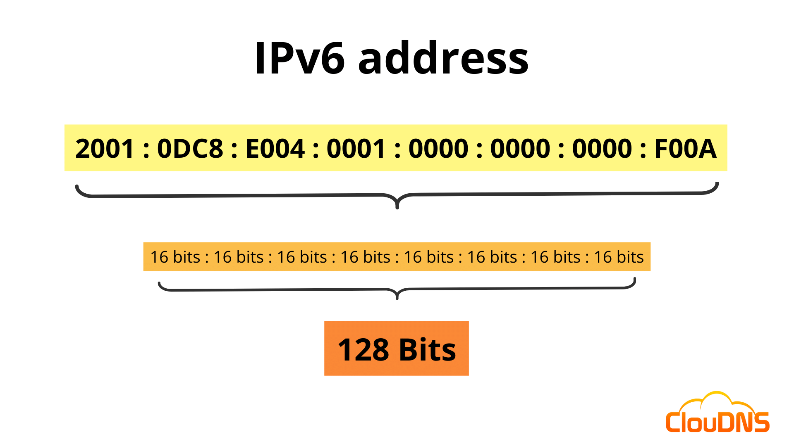

El modelo OSI es un modelo teórico de referencia que divide la comunicación de redes en 7 capas, permitiendo comprender y estandarizar cómo se transmiten los datos. Por otro lado, el modelo TCP/IP es un modelo práctico utilizado en Internet que organiza la comunicación en 4 capas. La principal diferencia es que OSI tiene una estructura más detallada y sirve como guía para entender las redes, mientras que TCP/IP se utiliza directamente para implementar la comunicación entre dispositivos. OSI está compuesto por 7 capas: física, enlace de datos, red, transporte, sesión, presentación y aplicación. Cada una cumple una función específica, desde la transmisión física de bits hasta la interacción con las aplicaciones. Por otro lado, TCP/IP tiene 4 capas: acceso a la red, Internet, transporte y aplicación. Estas agrupan varias funciones del modelo OSI, por ejemplo, la capa de aplicación de TCP/IP reúne las funciones de aplicación, presentación y sesión del modelo OSI. Las funciones de las capas del modelo OSI son así:
- Física: es la encargada de transmitir los bits por medios físicos, como cables, fibra óptica o señales inalámbricas.
- Enlace de datos: envía los datos entre dispositivos que están conectados a la misma red. Trabaja con direcciones MAC.
- Red: busca la ruta que deben seguir los datos para llegar a su destino y utiliza direcciones IP.
- Transporte: se encarga de que los datos lleguen correctamente al destino. También los divide en segmentos y controla que lleguen completos.
- Sesión: inicializa, mantiene y finaliza la comunicación entre dispositivos.
- Presentación: organiza y transforma los datos para que el dispositivo que los recibe pueda entenderlos.
- Aplicación: es la capa con la que interactúan los programas que usamos, como el navegador, el correo o WhatsApp.

IPv6 (Internet Protocol versión 6) es la versión más reciente del protocolo IP, creado para solucionar la escasez de direcciones disponibles en IPv4. Utiliza direcciones de 128 bits, lo que permite una cantidad mucho mayor de direcciones únicas. Además, ofrece mejoras en seguridad, eficiencia en el enrutamiento y configuración automática de dispositivos, facilitando la comunicación entre equipos en Internet.

OSPFv2 y OSPFv3 son protocolos de enrutamiento dinámico que permiten a los routers encontrar las mejores rutas para transmitir datos dentro de una red. OSPFv2 trabaja principalmente con direcciones IPv4, mientras que OSPFv3 fue desarrollado para IPv6. Ambos utilizan el algoritmo SPF (Shortest Path First) para calcular las rutas más eficientes y actualizar automáticamente las tablas de enrutamiento cuando ocurre un cambio en la topología de la red.